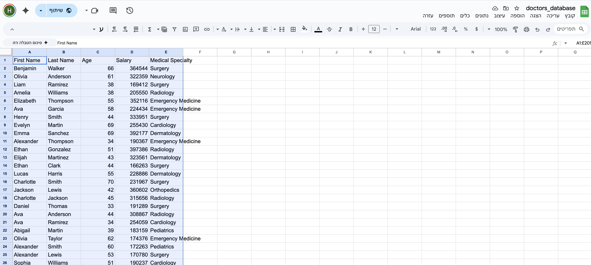
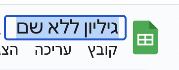
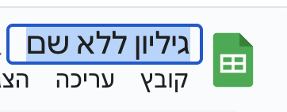

שלבי עבודה
שלב 1: פתיחת גיליון חדש
היכנסי ל-Google Drive ולחצי על כפתור הפלוס לפתיחת גיליון אלקטרוני חדש.
שלב 2: הזנת עמודות
הקלידי את שמות השדות (כותרות העמודות) בשורה הראשונה: First Name, Last Name, Age, Salary, Medical Specialty.

שלב 3: הזנת נתונים
הזיני נתונים עבור כל רופא/ה בשורות הבאות.
שלב 4: סימון הטבלה
סמני את הטבלה המלאה כולל השורה הראשונה.

שלב 5: שימוש בפונקציית QUERY
לחצי בתא כלשהו מחוץ לטבלה וכתבי את הפונקציה QUERY עם השאילתה הרצויה.
 
